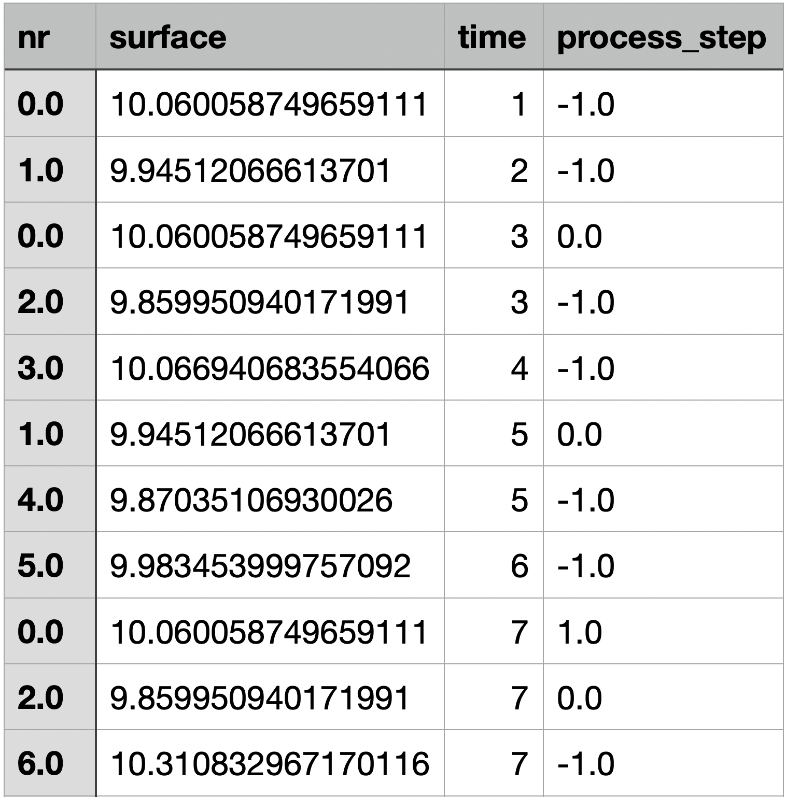

Example 03: Start simulation and create output data¶
This example will show how to start the simulation and save the data generated in the simulation. Before you can perform the operations shown here, you should check the input data used, as shown in examples one and two.
Note
this example can be found in the following directory for experimentation.
/prodsim/examples/example01/
Process description¶
For the operations described in this and the following example, a different process is used than in the previous examples. The reason is that the process used so far should have as complex a logistic structure as possible in order to be able to represent as many facets as possible. Here the focus is rather on the process functions and the process data, therefore a simple linear process with one item type is used here, in order to be able to recognize all connections directly without problems.
This example does not claim to represent a real process, but aims to show different aspects of modeling.
A shaft is machined, which is first drilled on a drilling station. The drill can break with a probability specific to the machine. If the drill breaks, the surface quality of the shaft is significantly damaged. After the drilling the shaft is processed on a lathe at specific shoulders. The surface roughness is increased depending on the wear of the turning tool. The wear of the lathe increases with each machining operation. In a final step, the shaft is polished. This improves the surface quality. However, the result of this step depends on the temperature in the factory. The higher the temperature, the worse the expected result. The temperature has a typical diurnal pattern, with a maximum at midday.
So that the following steps can be reproduced, the two input files are given completely.
{
"item": [
{
"name": "shaft",
"station": ["drill", "lathe", "polisher"],
"function": ["drilling", "turning", "polish"],
"source": "shaft_source",
"surface": ["n",10,0.2]
}
],
"station": [
{
"name": "drill",
"storage": 10,
"drill_breakage": ["f",0.015]
},
{
"name": "lathe",
"storage": 10,
"wear": ["f",0]
},
{
"name": "polisher",
"storage": 10
}
],
"factory": {
"temperature": ["f",20],
"function": ["temperature_func"]
}
}
The capacity of the machines was arbitrarily limited to ten each, since this is not a relevant size for this process and thus it can be avoided that an unnecessarily large number of objects accumulate, which burden the memory of the computer and thus reduce the speed of the simulation. It is generally recommended to limit the storage of the stations, unless you have a very good understanding of the process and can exclude an accumulation of objects.
Since exactly one shaft is passed at a time, demand can be left at the default value and component as well,
since there are no assemblies.
In addition, the top-level attribute factory was concreted, because a global variable temperature is needed. To be
able to define the course of the temperature, there is also exactly one element in the list function, in which this
course is defined.
The functions used can be defined as follows.
import random
def drilling(env, item, machine, factory):
# When the drill breaks, the roughness increases on average by 2 units.
if random.random() < machine.drill_breakage:
item.surface += random.normalvariate(2, 0.1)
# One drilling process takes two minutes.
yield env.timeout(2)
def turning(env, item, machine, factory):
# If the wear is unacceptably high, then the machine is serviced
if machine.wear >= 1:
machine.wear = 0
yield env.timeout(1)
# The surface quality depends negatively on the wear of the lathe.
item.surface += machine.wear**2 * 1.5
# it's possible to use the machine 50 times, before it has to be maintained
machine.wear += 0.02
# One turning process takes exactly four minutes.
yield env.timeout(4)
def polish(env, item, machine, factory):
# The achievable surface quality decreases with temperature
item.surface -= (8 - factory.temperature * 0.3)
# One polishing process requires four time units.
yield env.timeout(4)
def shaft_source(env):
# One machining job is started every time unit
yield env.timeout(1)
yield 1
def temperature_func(env, factory):
# determine the current time of day in minutes
current_time: int = env.now % 1440
# Set the temperature in the factory based on the time of day
# hour: 0 - 4
if current_time == 0:
factory.temperature = 19
# hour: 4 - 8
elif current_time == 240:
factory.temperature = 18
# hour: 8 - 12
elif current_time == 480:
factory.temperature = 20
# hour: 12 - 16
elif current_time == 720:
factory.temperature = 23
# hour: 16 - 20
elif current_time == 960:
factory.temperature = 22
# hour: 20 - 24
else:
factory.temperature = 20
yield env.timeout(240)
Note that the global function temperature_func is called at time zero of the simulation and waits exactly 240 minutes (four hours) between each call. If, however, one would choose random time intervals, then one should not check the simulation time for equality with a value, but would have to check whether the value lies in an interval, since one cannot of course always hit a certain value by chance.
Start the simulation¶
This section shows how to start the simulation.
First, of course, the environment must be imported and a new instance created. Since the simulation needs the input
data (defined above), these must be made known to the simulation environment. For this the method read_files is
called and the file paths to the input files are passed to it. If the method is called more than once, the paths passed
last are always used. Now the simulation can be started. For this purpose, only the corresponding method must be called
on the instance to which the input data have been passed.
The simulation time sim_time must be passed to the simulation method. In addition, there are three further optional
parameters that can be passed. track_components is a list, in which the names of arbitrary components can be listed
(not only items, but also station names or the factory can be set here). Every time a component with this name changes
its properties they are saved (the source is included as process step ‘-1’). Therefore, only the components that are
really needed should be set here, otherwise unnecessary data will be stored. However, if you don’t want to store all
data of a component at every station, but only at a certain station (for example the last one) you can also achieve this
by using track_comp_on_station. This is a list that should contain only station names. If there is a machining at
this station, then all process data will be saved for each workpiece that is machined at this station. It should be
noted that in this case the station data itself is not saved. If you want to do this, you have to list the station
separately in track_components.
Finally there is the parameter progress_bar, which is False by default. But if you set it to True, you get a
progress bar with a percentage, which indicates the simulation progress.
# import the simulation Environment
from prodsim import Environment
if __name__ == '__main__':
# create new instance
env: Environment = Environment()
# read input data
env.read_files('../data/process_data.json', '../data/functions.py')
# start the simulation
env.simulate(sim_time=4320, track_components=['shaft'], progress_bar=True)
As sim_time here 4320 was used, because minutes were chosen as unit and exactly three days of real time should be
represented. In addition track_components was used, since all data of the shaft should be stored and not only those
on a certain station. Also the properties of the factory or the stations are not of interest here.
progress_bar was set to True, because it is useful especially for the first simulation run. The performance of the
simulation, on the other hand, is not affected at all by the process bar.
Create Output¶
Finally, the data generated in the simulation must be made available. The output format used here is .csv. The
components specified in the simulate method only mean that the process data for these objects is stored
internally in a DataFrame. If the simulation has been run, this data will be deleted, if no corresponding method is
called on the simulation instance.
The method that must be called in this case is the data_to_csv method. This gets two required parameters and three
optional ones. Required is always a string that specifies the path to the folder where the files should be stored. In
addition, in the parameter components to be passed, it is specified from which objects the data should be saved. Of
course here only string of components can be passed, which were also passed in the method run_simulation, since
otherwise no data are present, which can be stored in an external file.
Optional parameters are remove_column, which removes the specific rows in the csv file. For example, it is possible
to hide the information about individual attributes. So that this information is not lost, there is the parameter
keep_original. If this value is set to true, then in the case that a column was removed from a file, an additional
file is created, which contains this column. Finally there is the parameter remove_name, which is False by default.
This decides whether the column ‘name’ is removed, since this is actually superfluous in the output, since a separate
file is created for each component anyway.
Thus, the following line must be added to the upper code example after the call to
run_simulation(..).
env.data_to_csv('../data/output_data/', ['shaft'])
Note
The files will be created in the specified directory (if this directory does not exist, it will be created automatically). You should be careful to use a new directory for each simulation, because the files will be saved only under the component name and will be overwritten each time if you do not create a new directory or rename the old files individually.
A section of the s generated data (remove_column=None, remove_name=True) is shown below.
{kind=link}
Lines in which Process step is -1 are attributes of shaft directly after they have been generated by the source. If you
don’t want to have them you can use track_comp_on_station instead of track_components in run_simulation. In
addition, nr. specifies the unique id of each item to be able to unambiguously assign data later. If you don’t want to
have this, you can simply add ‘nr’ to remove_columns and the data will not be copied to the .csv file.
Note
In example four methods are introduced to generate two different type of plots out of this data.